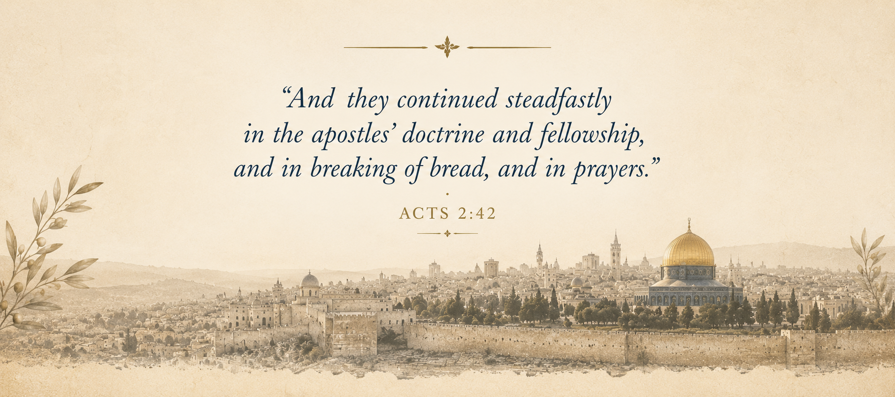

CHAPTER V
One Lord, One Faith, One Baptism
The church was born in a city filled with differences, yet those differences did not prevent people from hearing and receiving the same gospel. Some who gathered in Jerusalem had traveled only a few miles to attend the feast, while others had crossed seas and deserts, bringing with them languages, customs, and memories formed in places far removed from Judea. Luke carefully names the regions from which these visitors came so that we can recognize the remarkable diversity gathered beneath the sound from heaven. Parthians stood beside Medes, visitors from Rome listened alongside pilgrims from Arabia, and people who might never have met under ordinary circumstances suddenly found themselves hearing the wonderful works of God proclaimed in languages they understood.
The miracle of Pentecost did not erase the distinctions among these people. Instead, it gave them a new center. Their backgrounds remained different, but they were being drawn toward the same Lord and brought into the same unfolding work of God. This truth continues throughout the Book of Acts. The gospel enters Samaria without becoming a different Samaritan message, reaches the household of Cornelius without becoming a separate Roman faith, and travels with Paul through Ephesus and Corinth without being reshaped to satisfy Greek philosophy or the expectations of the empire. New people and communities continually encounter the gospel, but the message they receive remains the apostolic message that was first proclaimed in Jerusalem.
Years later, Paul gives clear language to the unity that Luke has been showing us through the history of the early church. Writing to the believers in Ephesus, he reminds them that the foundation of their fellowship is not a shared culture, a common history, or a human agreement, but the work and authority of God Himself.
“There is one body, and one Spirit… one Lord, one faith, one baptism.”
Paul is not describing an ideal that the church might someday accomplish if its members work hard enough to overcome their differences. He is identifying a spiritual reality that already defines the people who belong to Christ. His repeated use of the word one draws our attention to the foundation beneath every expression of Christian fellowship: one body, one Spirit, one hope, one Lord, one faith, and one baptism. These are not separate foundations from which believers may choose according to preference. They belong together because they all point to the same Lord who calls His people into one body.
This unity is not restrictive; it is the very thing that makes genuine fellowship possible. The same Christ who called fishermen beside the Sea of Galilee gathered Jews and Gentiles, servants and rulers, women and men into a fellowship that human effort alone could never have created. Their unity did not depend upon every person having the same background or sharing the same experience. It began with Christ, and it was sustained by their common response to the gospel.
Their unity begins with Christ, because their lives have been brought under the authority of the same Lord.
That distinction helps us understand the pattern that unfolds throughout Acts. The apostles did not establish separate identities by negotiating different versions of the gospel for different audiences. They preached Jesus Christ, and those who believed discovered that they had been brought into a fellowship greater than themselves. Peter ministered in Jerusalem, Philip carried the message into Samaria, and Paul traveled across the Mediterranean world. Their personalities and circumstances were not identical, and the people who heard them came from different cultures and circumstances. Nevertheless, the apostolic witness remained consistent because each messenger stood beneath the authority of the same Lord and proclaimed the same gospel.
The picture is not that of separate rivers attempting to reach one sea by unrelated courses. It is more like a living tree whose branches extend in different directions while drawing life from the same source. Each branch may reach a place another branch cannot, and its growth may take a different shape, but it remains alive because it is connected to the tree. In the same way, the gospel reaches people across boundaries without requiring the church to abandon the foundation that gives it life. Diversity of people and places does not require a division of faith. The message remains rooted in Jesus Christ.
As the centuries passed, the history of Christianity became more complicated. Names arose that honored reformers, cities, confessions, and movements. Communities of sincere believers preserved traditions that had shaped their families and congregations for generations. Many loved Jesus Christ deeply and sought to honor Scripture according to the understanding they had received. Their stories deserve to be considered with honesty and respect, because the history of the church includes countless examples of sacrifice, devotion, perseverance, and faith.
Yet when we return to the Book of Acts, another question deserves our attention. Before these later names and divisions appeared, what was the identity of the people who first received the gospel? What held them together when there were no centuries of denominational history to define them and no inherited labels to distinguish one congregation from another?
What existed before those names?
Luke's account brings us back to a church gathered around one Lord, a people continuing in the faith proclaimed by the apostles, and believers responding to the gospel through the baptism taught and practiced in the earliest Christian community. The story does not begin with competing religious identities. It begins with the fulfillment of God's promise, the preaching of Jesus Christ, and the response of people who believed the message delivered to them.
There is a particular beauty in the simplicity of that picture. Biblical unity is not something manufactured through compromise or held together merely by human organization. It grows from a shared relationship with Jesus Christ and a willingness to order life according to His word. This does not mean that every disagreement disappears or that believers never need patience with one another. It means that the foundation of their faith is not something they are free to redesign whenever differences become uncomfortable. The church receives its identity from the Lord who called it into existence.
For that reason, Paul's words sound not only like an instruction but also like a reminder of what the church has received. The church does not create the Lord it worships, invent the faith it proclaims, or establish baptism according to its own preference. These belong to the gospel entrusted to the apostles and passed on to those who believed their message. The responsibility of every generation is to examine that message faithfully, to hold to what the apostles taught, and to allow the Lord rather than tradition or personal preference to define the church.
When we understand this, the words one Lord, one faith, and one baptism become more than a familiar passage of Scripture. They remind us that the church's unity is found in the One who saves it. Strangers become brothers and sisters, not because they have inherited the same customs or chosen the same human tradition, but because Jesus Christ has called them, brought them into His body, and given them a shared foundation. The church belongs to Him, and its life must continue to reflect the faith that was entrusted to the apostles from the beginning.
